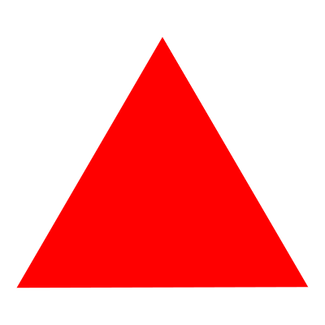
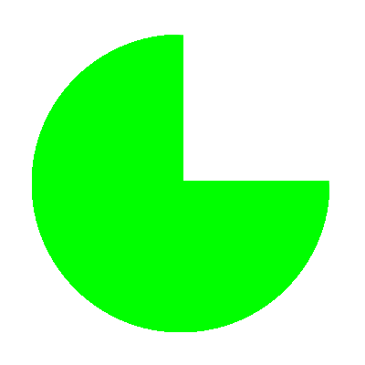
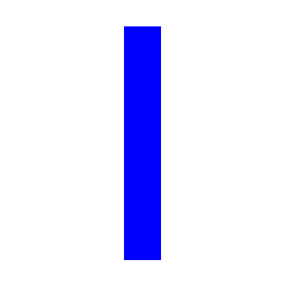

History of
A.G.I



A-lliance
G-raphique
I-nternationale
What Is A.G.I?
Inwards
The AGI unites the world's leading graphics designers and artists in a professional club of common interest and achievement. It is an élite club. Its members have been collectively responsible for the identity design of most of the world's top corporations and institutions as well as for countless examples of globally known packaging, publications, illustration and posters. The AGI provides for friendship, mutual respect and the enjoyment of the company of the like-minded - even reassurance in the face of a sceptical world. Ideas and experiences are exchanged informally at periodic meetings and by letter, email and fax. All members may also attend the AGI Congress, which involves a more formal business and social agenda. A different country hosts the Congress each year and presents its own history, members' work and professional achievements in art, commerce and education.
Outwards
The role and importance of the AGI within the professional field of graphic design is clearly different from the existing national and international professional organisations. In recognition of this context, the AGI is also a platform for activity. It has a task to tell the world and change it. Through the relationships and interaction of its members, the AGI promotes graphic design in lectures, education and publishing. It encourages knowledge and understanding among the young and fosters contacts with other institutions, organisations and companies involved in graphic design.
The AGI holds exhibitions of members work which are highly influential in disseminating new forms, techniques and ideas. There is a book publishing programme based on the thoughts and works of members. There are contacts with colleges and schools, government bodies and commercial institutes, all aimed at promoting graphic design and visual literacy.
Backwards
In the 1940s, commercial artists, mural makers, typographers, printmakers, art directors, illustrators and poster designers increasingly realised their common bonds, and the modern profession of graphic design began to be defined. In 1951, five graphic artists - two Swiss and three French - decided to formalise their relationship into some sort of association. Their idea was simply to share common interests and friendships across national and cultural borders.
It was a notion that soon attracted leading exponents of the graphic arts from elsewhere in Europe and in the USA. In 1952 the Alliance Graphique Internationale was incorporated in Paris with 65 members from 10 countries. The first AGI exhibition was held in Paris in 1955 and in 1969 the headquarters moved from Paris to Zurich. Student seminars were introduced in 1979 and the first Young Professional AGI Congress was held in London in 1994.
Forwards
An explosion of global communications is changing the world. Powered by media like television and the internet, a common visual language is forming as symbols and images become the world's universal vernacular. The original members of the AGI were responsible for creating many elements of this new language. As the world turns, their successors - exponents of the traditional and the new media - are becoming members of the AGI themselves. Today there are around 370 from Africa, America, Australia, Asia, the Middle East and Europe - 32 countries in all.
Membership of the AGI requires reputation and achievement of the highest order and commitment to the processes of visual learning and perception, unfettered by cultural differences. The AGI remains dedicated to the universal aspect of graphic design as a means of communication and information, and its ideals remain relevant to the new world of visual literacy which its members have helped to bring about.
1950s
1960s
1970s
1980s
1990s
2000s
2016
NEXT IN SEOUL